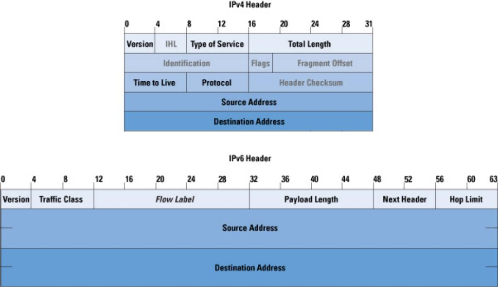
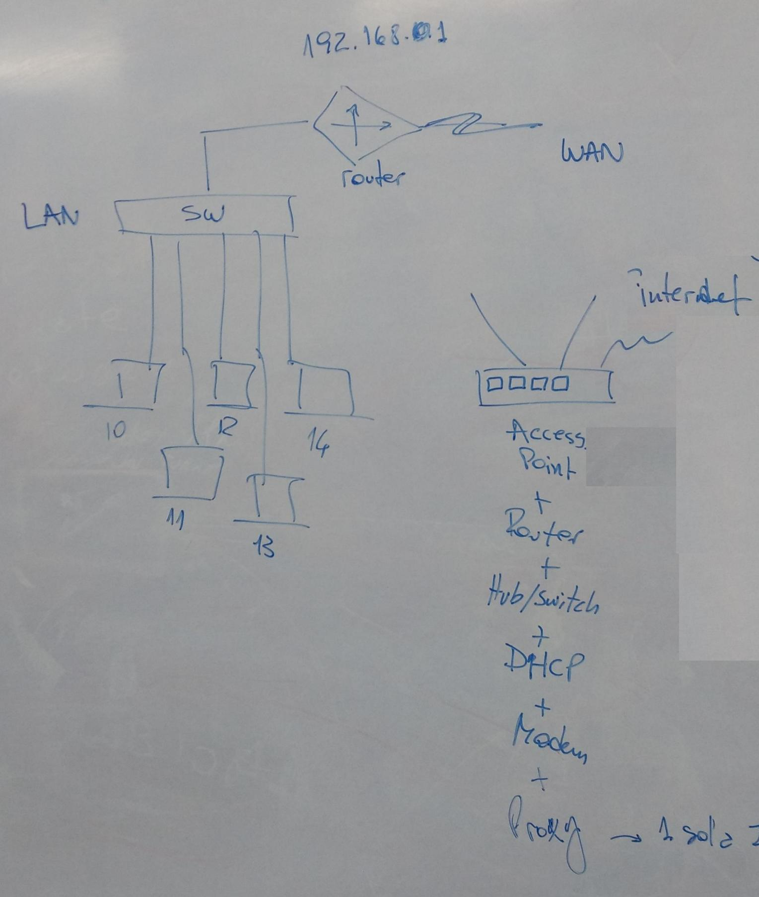
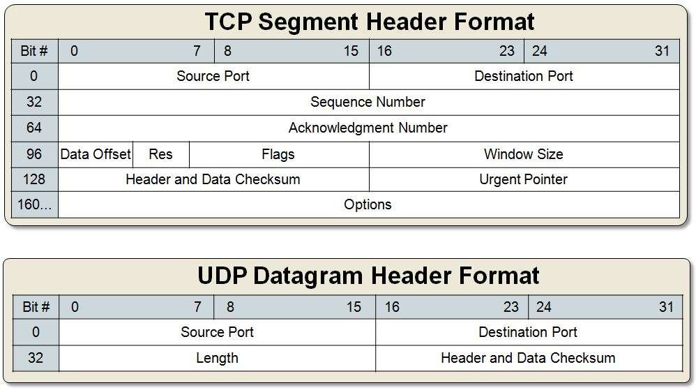
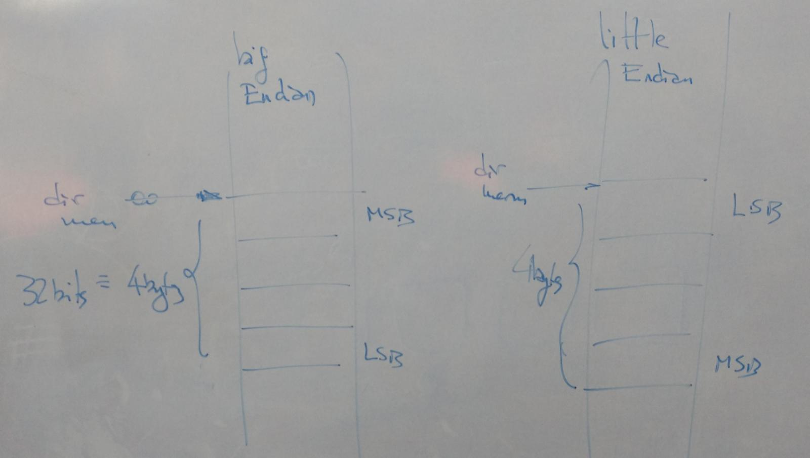

Redes de datos y Sockets
¿Qué es una red informática?
{kind=link}
{kind=link}
Video EducAr
Modelo OSI y TCP/IP


Modelo ISO de comunicación entre sistemas. Simplificado en la época de TCP/IP.
Modelo OSI y TCP/IP
- Las capas de Aplicación, Presentación y Sesión se han fusionado actualmente en la capa de Aplicación.
- Con TCP/IP la capa de trasporte corresponde a TCP o UDP
- Con TCP/IP la capa de red es la dirección IP (IPv4 o IPv6)
- La capa de enlace será Ethernet, WiFi u otras
- El medio físico puede ser cable, fibra optica, el aire (WiFi), etc...
Introducción
- Todos usamos TCP/IP en internet
- Protocolo IP: Mi dirección!
- Protocolos de transmisión:
- TCP: Transmission Control Protocol
- Comunicación con conexión
- UDP: User Datagram Protocol
- Comunicación sin conexión
- SCTP: Stream Control Transmission Protocol (IETF 2000)
- Comunicación con conexión pero fuera de orden
- Cliente/Servidor: En una conexión TCP/IP siempre debe haber un servidor (que espera conexiones) y un cliente (que se conecta al servidor).
- Socket: Abstracción de conexión entre un par cliente servidor que permite conectarnos/trabajar como si estuvieramos trabajando con archivos.
La dirección IP (v4)
Classful

Classless

- En el esquema classful la dirección define que parte es de red y que parte es de host.
- En el esquema classless necesitamos una mascara de 32bits o un entero que nos definen que parte es red y que parte es host.
Mi IP
- ¿Como la consigo? Dos opciones:
- Fijo mi IP manualmente
- Uso el protocolo DHCP
- Ejemplo red:
- Red 192.168.0.0
- Mascara v1: 255.255.255.0
- Mascara v2: /24
- Router 192.168.0.1
- Broadcast 192.168.0.255
- Host1 192.168.0.10
- Host2 192.168.0.11
- Host3 192.168.0.12
Mi IP
- Dirección de loopback: 127.0.0.1
- Manejo dirección Linux:
- archivo: /etc/network/interfaces
iface eth0 inet static address 192.168.1.10 network 192.168.1.0 netmask 255.255.255.0 broadcast 192.168.1.255 gateway 192.168.1.254
Formato de IPv4 vs. IPv6

Formato de IPv4 vs. IPv6

{kind=link}
Espacio de direcciones
Internet Topology Map, January 2009 (UC Regent)

{kind=link}
{kind=link}
Mi Configuracion
$ ip a
- lo: loopback
- eth0 / e* : Cable
- wlan0 / w* : WiFi
Ejemplo de red

{kind=link}
¿Como me conecto a Internet?
- Tengo un modem de algún proveedor con una IP pública
- Ese modem me da servicios de: Router, Switch/WiFi, Proxy, DHCP, etc...
- Mi máquina arranca sin IP... ¡Necesita una para poder conectarse!
- Dentro de la red interna (Ethernet o WLAN) hace un pedido de broadcast (todos lo reciben) via DHCP
- En el modem existe un server DHCP que asigna una IP privada y la asocia a la dirección física (MAC Address)
- DHCP me asigna: Una IP, la red, el router y el DNS más cercano.
¡Ya puedo navegar por internet!
DNS
www.nachodigital.com.ar -> 66.228.47.221
$ ping www.wikipedia.org
PING dyna.wikimedia.org (208.80.154.224): 56 data bytes
64 bytes from 208.80.154.224: icmp_seq=0 ttl=52 time=175.908 ms
64 bytes from 208.80.154.224: icmp_seq=1 ttl=52 time=174.921 ms
El DNS nos ha dicho que la IP de
www.wikipedia.org es 208.80.154.224
Puertos TCP
Ya tenemos la dirección IP... ¿Que nos falta?
- Imaginemos nuestra máquina como un edificio...
- Dentro del edificio hay muchas oficinas...
- Dentro de una máquina hay muchos programas...
- Entonces... ¿Como distinguimos entre ellos?
- ¡Necesitamos algo más que la dirección!
- Puertos TCP/UDP al rescate...
Resumen TCP/IP
Direcciones IP:
- IPv4: 232 hosts
- IPv6: 2128 hosts
Puertos:
- TCP: 216
- UDP: 216
Cada uno, espacios de puertos por protocolo.
Paquete TCP
Puertos TCP
- TCP usa el concepto de número de puerto para identificar a las aplicaciones emisoras y receptoras. Cada lado de la conexión TCP tiene asociado un número de puerto (de 16 bits sin signo, con lo que existen 65536 puertos posibles) asignado por la aplicación emisora o receptora.
- Los puertos bien conocidos son asignados por la Internet Assigned Numbers Authority (IANA), van del 0 al 1023 y son usados normalmente por el sistema o por procesos con privilegios.
- Los puertos registrados son normalmente usados por aplicaciones privadas (por ejemplo 8080). Los puertos dinámicos/privados también son usalmente usados por las aplicaciones de usuario.
Puertos (IANA)
- SSH -> 22
- WEB -> 80
- DNS -> 53
- FTP:
- 20 (datos)
- 21 (control)
Ejemplo
www.nachodigital.com.ar:80
Ejemplo de puertos
- 2001
- 3000
- 4004
- 4161
- 8080
Siempre arriba de 1024
Herramienta1: NetCat

Herramienta1
NetCat:
sudo apt install netcat
- Para correr un server
nc -n -vv -l -p 4161
nc 127.0.0.1 4161
echo "Hola Mundo" | nc 127.0.0.1 4161
cat test.txt | nc 127.0.0.1 4161
Herramientas 2
TCPdump
sudo apt-get install tcpdump
sudo tcpdump -i lo
WireShark
sudo apt-get install wireshark
kdesu wireshark -i lo
Nota: Ambos programas hay que correrlos como root para poder capturar (por eso el uso de sudo).
¿Problemas de red?
Si misma red y problemas:
sudo iptables -F
iptables es un firewall que viene con linux.
Esto limpia las reglas que trae.
Para saber que hay configurado:
sudo iptables -L
Guia Beej para redes en castellano (pdf local)
Guia Beej para redes (online, original y en ingles)
Programación de Sockets
Orden de bytes para el host y la red
- big-endian (TCP/IP, IBM RS6000, SUN, ...)
- dirección N : byte más significativo
- dirección N+1: byte menos significativo
- Little-endian (Intel x86, DEC Alpha, ...)
- dirección N : byte menos significativo
- dirección N+1: byte más significativo
Orden de bytes para el host y la red

{kind=link}
Funciones de orden de bytes
para el host y la red
unsigned long htonl (unsigned long hostlong)Convierte un long del formato de la máquina al de la red.
unsigned short htons (unsigned short hostshort)Convierte un short del formato de la máquina al de la red.
unsigned long ntohl (unsigned long netlong)Convierte un long del formato de la red al de la máquina.
unsigned short ntohs (unsigned short netshort)Convierte un short del formato de la red al de la máquina.
TCP: Conexión


Arquitectura Cliente / Servidor

{kind=link}
Sockets
int socket(int domain, int type, int protocol);- Domain: AF_UNIX, AF_INET, AF_INET6, mas...
- Type: SOCK_STREAM, SOCK_DGRAM, mas...
- Protocols: Con estas opciones puede ser 0
- Los sockets son una abstracción que nos permite comunicarnos con otros programas usando descriptores de fichero estándar de Unix.
- Hay distintos tipos, usaremos AF_INET (IPv4). Dentro de estos existen TCP (SOCK_STREAM) o UDP (SOCK_DGRAM). Para crearlos usaremos la función socket()
{kind=link}
Socket TCP
Uso sockets
- Server
- bind()
- listen()
- accept()
- Cliente
- socket connect()
Luego lo usamos mediante el file descriptor (ambos)
bind
int bind(int sockfd, const struct sockaddr *addr,
socklen_t addrlen);
- sockfd: Valor retornado por socket()
- sockaddr: Estructura de direcciones
- addrlen: Tamaño de la estructura
bind: Sus estructuras
Existe un struct sockaddr, pero para un manejo
mas sencillo en TCP/IP se usa:
struct sockaddr_in {
short int sin_family; // familia de direcciones, AF_INET
unsigned short int sin_port; // Número de puerto
struct in_addr sin_addr; // Dirección de Internet
unsigned char sin_zero[8]; // Relleno para preservar el tamaño
// original de struct sockaddr
};
Dirección de Internet (una estructura por herencia histórica):
struct in_addr {
unsigned long s_addr; // Esto es un long de 32 bits, ó 4 bytes
};
listen
int listen(int sockfd, int backlog);
- backlog: Cantidad de conexiones que pueden quedar en la cola de conexión esperando.
accept
int accept(int sockfd, struct sockaddr *addr,
socklen_t *addrlen);
- addr y addrlen: Dirección del cliente remoto y su tamaño.
- Este llamado es bloqueante y el programa queda en este punto hasta que aparezca una conexión nueva.
connect
int connect(int sockfd, const struct sockaddr *addr,
socklen_t addrlen);
- Pide una conexión con un socket para manejarla (sockfd) y la dirección del servidor (addr/addrlen).
read/write
unistd.h
read() - Lectura de archivos o sockets:
ssize_t read(int fd, void *buf, size_t count);
write() - Escritura en archivos o sockets:
ssize_t write(int fd, const void *buf, size_t count);
Ambas funciones son bloqueantes y pensadas para archivos.
Se quedan esperando hasta que algo haya para leer o se pueda
enviar la data a enviar.
send/recv
sys/socket.h
Estas funciones son especificas para manejo de sockets
y proveen información adicional (flags).
send() - Envio de datos por un socket:
ssize_t send(int sockfd, const void *buf, size_t len, int flags);
recv() - Recepción de datos desde un socket:
ssize_t recv(int sockfd, void *buf, size_t len, int flags);
{kind=link}
Socket UDP
Uso UDP
- No nos conectamos:
- sendto()
- recvfrom()
Como la comunicación es inconexa no es necesario conectarse al socket, solo usarlo. Igual es como si hubiera un servidor/cliente. Siempre uno tiene que quedarse escuchando, el que recibe.
sendto/recvfrom
sys/socket.h
Estas funciones son el send/recv con manejo de sockets UDP
ya que permiten especificar el otro participante.
sendto() - Envio de datos por un socket UDP:
ssize_t sendto(int sockfd, const void *buf, size_t len, int flags,
const struct sockaddr *dest_addr, socklen_t addrlen);
recvfrom() - Recepción de datos desde un socket UDP:
ssize_t recvfrom(int sockfd, void *buf, size_t len, int flags,
struct sockaddr *src_addr, socklen_t *addrlen);
Codigo de ejemplo
- Ejemplo UDP (zip)
- Ejemplo TCP Server
- Ejemplo TCP Client
- Con la librería de Info1
- sock-lib.h & sock-lib.c
- TCP server.c & client.c
Procesos y Sockets
¡Quiero hacer un servidor que atienda
a varios clientes al mismo tiempo!
Y no morir en el intento...
Como atender varios pedidos
al mismo tiempo
Hay dos formas:
- Una fácil de implementar, pero dificil de programar
- Usamos send()/recv() como NONBLOCKING
- Otra mas dificil de implementar, pero mucho mas elegante
- Creamos distintos procesos: fork()
NONBLOCKING
Parte no bloqueante de sockets_3client_nonblocking.c
printf("wait...");
do {
n = recv(sockfd,buffer,255,MSG_DONTWAIT);
printf(".");
} while (n == -1);
Trabajando en modo no bloqueante, retorna:
- -1 si no llegó nada.
- >0 si llegaron datos.
¿Y el resto del código?
Mayormente no cambia. Tenemos los mismo pasos:
- Creacion con socket()
- Armado de la estructura serv_addr
- Conexión al socket con connect()
- Envio/recepción de datos con send()/recv()
- Cierre del socket
¿Y en el servidor cambia algo?
No en este ejemplo, pero se puede cambiar el server a una máquina de estados. De esa manera y como no bloqueante se pueden manejar multiples conexiones simultaneamente. Pero para poder manejar distintos sockets es mejor usar fork()
Compilar los ejemplos de código:
$ gcc -o client sockets_3client_nonblocking.c
$ gcc -o server sockets_3server_nonblocking.c
Usando fork()
Fork nos permite crear un proceso "hijo", copia del "padre".
man 2 fork
#include <unistd.h>
pid_t fork(void);
El proceso hijo es un duplicado del padre, pero
tiene un PID distinto (valor retornado pid_t).
¿Como identificamos clones?
{kind=link}
Gravity Falls

fork() retorna...
- 0 : En el proceso nuevo (hijo)
- -1 : Si hay un error
- pid: El process ID del proceso hijo al padre
Ejemplo1:
$ gcc -o ej1 ej_fork.c
Fork: Funciones
- getpid() - Obtiene el PID del proceso actual.
- getppid() - Obtiene el PID del proceso padre.
- wait() - Espera a que un proceso cambie de estado.
man 2 wait
#include <sys/types.h>
#include <sys/wait.h>
pid_t wait(int *status);
pid_t waitpid(pid_t pid, int *status, int options);
Memoria del child process
Si bien Unix originalmente copiaba toda la memoria del proceso padre, Linux desde el principio fue pensando para intel 386 que tiene "copy on write" lo que permite usar la misma memoria hasta que el programa cambie un dato.
Por esto una vez copiado, la dirección a mostrar es la misma. Pero existe otra razón adicional, Linux tiene un manejo de memoria virtual. Lo que nos muestra puede tener el mismo puntero, pero no es la misma dirección de memoria física (ref).
Ejemplo2:
gcc -o ej2 ej_fork_kill.c
Para el segundo ejemplo utilizaremos los comandos:
- kill - Dado un PID lo "mata".
- ps - Lista los procesos corriendo en la máquina.
- ps ax: Ver todos los procesos
- ps elf: Para ver todas las columnas
- top / htop - Monitoreo "online" de procesos.
- top viene, htop hay que instalarlo.
- pstree - Arbol de procesos.
Ejemplo3:
gcc -o ej3 ej_fork_count.c
En este ejemplo vemos padre e hijo trabajando en paralelo.
Ejemplos vistos
Ejemplo TCP fork
{kind=link}
- Modificación del server del ejercicio anterior (didáctico)
- Original: sockets_1server.c
- Version Fork: sockets_1server_fork.c
- Ejercicio fork con wait() (como se debe):
Codigo:
Ejemplo TCP fork
$ gcc -o ej3-tcp-clt tcp-cliente.c
$ gcc -o ej3-tcp-svr tcp-servidor.c
$ ./ej3-tcp-svr
$ ./ej3-tcp-clt 127.0.0.1
$ ./ej3-tcp-clt 127.0.0.1
...
$ ps ax | grep ej3
Otro ejemplo UDP
$ gcc -o ej4-udp-clt udp-cliente.c
$ gcc -o ej4-udp-svr udp-servidor.c
$ ./ej4-udp-svr
$ ./ej4-udp-clt 127.0.0.1 Hola
$ ./ej4-udp-clt 127.0.0.1 Mundo
Codigo:
Reciclando nuestro bind
- Pedir un int que valga 1:
const int uno=1; - Antes de armar el socket agregar:
setsockopt(sockfd, SOL_SOCKET, SO_REUSEADDR, (void*)&uno,
(socklen_t)(sizeof(uno)));
Ejemplo Allegro/TCP pooling
$ gcc -o al08_keyboard_client al08_keyboard_client.c -lallegro -lallegro_main -lallegro_image -lallegro_primitives
$ gcc -o al08_keyboard_server al08_keyboard_server.c -lallegro -lallegro_main -lallegro_image -lallegro_primitives
$ ./al08_keyboard_server
$ ./al08_keyboard_client 127.0.0.1
Presentacion Pizarron